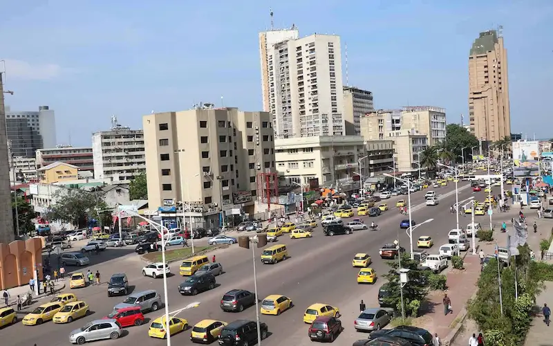

My favorite city is Kinshasa. It is the capital of the Democratic Republic of Congo and one of the most vibrant cities in Africa. Kinshasa is a beautiful and diverse place filled with music, culture, and kind people. The city is located along the Congo River and is known for its lively atmosphere, colorful markets, and rich traditions that reflect the spirit of the Congolese people.
From the bustling streets to the peaceful views of the river, everything about Kinshasa makes me proud and amazed. It is a city that never sleeps, full of creativity and energy. Kinshasa truly represents the heart of the Democratic Republic of Congo and shows the strength and beauty of its people.
